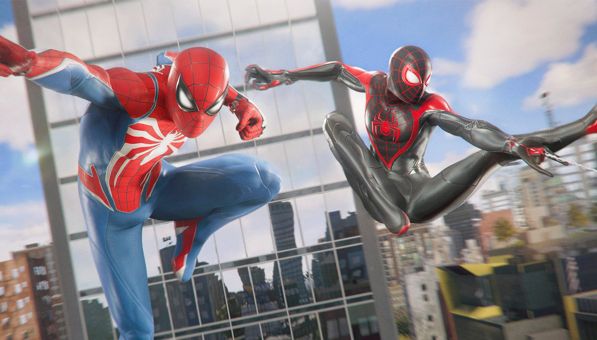

Peter Parker
A spider bite gives Peter extraordinary powers. His talent for science helps him turn those powers into a way to protect New York, even when helping others complicates his own life.

Meet the heroes behind the mask. Explore their stories on screen and in games.
A spider bite gives Peter extraordinary powers. His talent for science helps him turn those powers into a way to protect New York, even when helping others complicates his own life.
Miles learns what the name Spider-Man means to him. In many stories he can camouflage himself and deliver a bio-electric shock, giving him his own ways of helping the city.